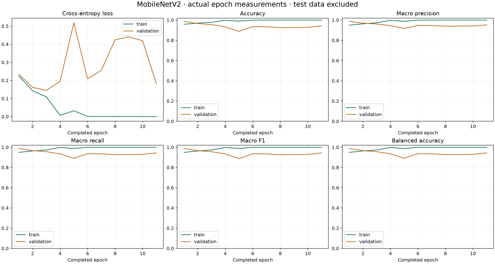

EggGrade · 20-egg EMEET study
Physical results
The first fresh scan correctly classified 3 of 4 reserved eggs (75.0%). Across 40 scans of the same eggs, 28 returned the correct age, 3 returned the wrong age and 9 asked for recapture. Camera acquisitions failed on 0 scans.
Research candidate for Day 16, Day 18 and Reject. The EMEET C60E supplied fresh camera views while the microcontroller turned the egg holder. MobileNetV2 trained on the host GPU. The local CPU runs the locked model for physical trials.
How did you train the model, and which CNN did you use?
We initialized MobileNetV2 from ImageNet weights and fitted a three-class output. Images were resized to 224 × 224 and normalized. AdamW optimized weighted cross-entropy in batches of 32.
The first three epochs trained the classifier. Later epochs also updated the last five feature blocks. Each egg or annotated source family contributed equal total weight within its class, and the three classes received equal total weight. Small geometric and brightness changes augmented the training set during fitting.
Why use this split? How did you check for leakage?
We assigned six eggs per age to training, two to validation and two to physical testing before fitting. This 60/20/20 split keeps every view of an egg in one partition. Each egg contributes 300 real images from two placements. Each placement covers 12 estimated holder sectors.
The preserved Reject collection contributed 3,033 training and 570 validation images. Its 211 archived test images are excluded from physical testing. Source labels include Reject and Unfertilized. There were no confirmed dead-embryo or spoiled eggs in this cohort and no physical Reject test eggs. Accuracy for those conditions remains unknown.
Development checks verified egg and source-family assignments, image hashes, and exact pixel identities. Thousands of views do not increase the number of independent eggs. Unknown public egg or batch identities limit any leakage guarantee. Some eggs may overlap prior experiments. The four reserved eggs stayed outside this candidate’s fitting and calibration.
Which epoch was selected, and why did training stop?
Training finished after 11 epochs. The checkpoint from epoch 1 was restored. The recorded stopping condition was validation patience.
The cap was 50 epochs. Patience was 8 stale epochs after warmup. Progress required a validation macro-F1 gain greater than 0.001. Lower validation loss could break an equal-F1 tie without resetting patience.

Epoch measurements · Training recipe · Checkpoint metrics
Where are accuracy, precision, recall and F1?
Training images · selected GPU checkpoint
Accuracy: 0.9585 · Macro F1: 0.9491 · Balanced accuracy: 0.9491 · Weighted F1: 0.9585
Validation images · exported CPU model
Accuracy: 0.9876 · Macro F1: 0.9878 · Balanced accuracy: 0.9878 · Weighted F1: 0.9876
Validation decisions with the scanner rules
Before comparing the two settings, the training egg edge measurements suggested a second sharpness threshold of 15. The original threshold was 20. The development comparison selected 15. For Day 18, the original setting returned 145 correct and 0 wrong grades. The selected setting returned 439 correct and 0 wrong grades across the same 600 views.
Per-egg and per-class calibration evidence
These validation examples informed calibration. The physical test below uses new camera scans with all decision thresholds frozen.
How were these values computed?
For a class, TP counts correct predictions, FP counts other classes predicted as that class, and FN counts its missed examples.
Precision = TP / (TP + FP). Recall = TP / (TP + FN). F1 = 2TP / (2TP + FP + FN).
For Day 18 in the raw CPU validation table, TP = 579, FP = 1, FN = 21, giving precision 99.8%, recall 96.5% and F1 98.1%.
Accuracy is total correct divided by all evaluated images or attempts. Macro F1 averages the class F1 values. Coverage is classified attempts divided by all attempts.
Physical accuracy counts wrong, unclassified and failed acquisitions as unsuccessful, and physical Reject recall is unmeasured.
Why can Day 16 and Day 18 be confused?
The CPU model gave 21 known Day 18 validation views a Day 16 top prediction and 1 known Day 16 views a Day 18 top prediction. The incubation records differ by two days. The EMEET sees light transmitted through the egg. Some eggs of either age showed a dark center and bright rim. Angle, shell and exposure can change that pattern, and a low edge score can trigger recapture. The exact biological cause of each error was not measured. Embryonic stages can progress at different rates across duck types. Published Pekin and Mulard staging study.
How consistent is the same egg? What is the field accuracy?
Ten attempts completed on 4 of 4 reserved eggs.
First scan per egg
3/4 correct (75.0%). 0 wrong, 1 unclassified, 0 acquisition failures. 3/4 returned a class. Accuracy among those classified: 100.0%.
Confusion counts. Each row is the known class; each column is a scanner outcome.
Macro F1 across represented classes: 83.3%. No physical Reject egg was available.
All repeat attempts
28/40 correct (70.0%). 3 wrong, 9 unclassified, 0 acquisition failures. 31/40 returned a class. Accuracy among those classified: 90.3%.
Confusion counts. Each row is the known class; each column is a scanner outcome.
Macro F1 across represented classes: 78.8%. No physical Reject egg was available.
Elapsed time per recorded attempt, including acquisition and inference, had a median of 6.1 seconds and a range of 6.0 to 6.2 seconds.
Class agreement is the fraction of valid scans with the most frequent class outcome, including unclassified. Decision agreement compares the decision to classify or request another scan. Exact repeat match also requires identical score vectors and all ten successful acquisitions.
What each physical camera view predicted
These are the raw network predictions from the fresh physical scans. The scanner then applies its decision rules and combines three views for each result.
Physical records, confusion counts and timing
The planned primary physical result uses the first fresh scan on each of four eggs. Ten fresh scans per egg describe repeatability. With two eggs per age, one changed first-scan result changes that age’s observed recall by 50 percentage points. Production-field accuracy across farms, vendors or batches remains unestablished.
Progress against the study objectives
The capture records verify camera acquisition, holder motion and CNN training. The physical trial measures scanner decisions, repeatability and time per attempt. Mechanical routing into the correct grade bins requires a separate observed sorting trial.
The study’s software-quality objective also requires participant responses on functional suitability, performance, usability and reliability. The available evaluation instrument is blank. No participant quality score is claimed.